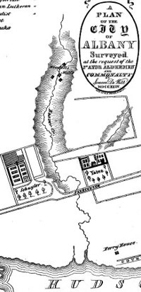
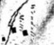

|
The Beaverkill is a term referring to one of the three major streams that flowed from the west, cut through colonial Albany, and emptied into the Hudson River. Today, the Beaverkill is almost entirely underground - flowing through pipes and culverts but still along its historic route. Water for the Beaverkill came out of the ground above today's Albany High School campus and wound its way "downtown" between today's Western and Washington Avenues.It crosses under Western Avenue near Quail Street, flows behind Elberon Place, forms the bed of Washington Park Lake, crosses Madison Avenue at New Scotland, flows east along today's Myrtle Avenue, behind Hackett Middle School, meandered across Delaware Avenue, and into Lincoln Park. East of Lark Street, the Beaverkill has two distinct stretches: From Lark to South Pearl, stream ran downhill creating enough flow for a milling complex on the upper portion and a slaughterhouse near Pearl Street.Its early Albany history began when a mill was first erected at the "Buttermilk Falls" at the imaginary intersection of today's Hawk Street. The first century of of the story is entertwined with the development of Wendell's Mills. Further downstream, it separated the two large estates built by General Philip Schuyler and attorney Peter W. Yates. The final, lowland stretch of the Beaverkill (east of South Pearl Street) ran through the Pastures and into the Hudson just south of the ferry house. The Charles family meat production and tannery sites were located east of South Pearl Street between the Beaverkill and the road to the ferry. In 1689, Melgert Wynantse Vanderpoel petitioned the Albany government for the right to erect a sawmill on the Beaverkill. He owned that mill until his death in 1710. In 1715, Frederick Harmanse Visscher reportedly owned a mill on the stream. This page is in its early stages of development and will provide access to the Beaverkill story!
Sources: This exposition has been formed from community-based information and a close reading of city maps. It also benefits from research conducted by historian Tricia Barbagallo for a school-based program entitled "Life Along the Beaverkill: A History Walk through Lincoln Park," which she presented in conjunction with the Thomas O'Brien Academy of Science and Technology (TOAST) during 1995. Materials from it are on file at the project office. The other two major streams were the Ruttenkill and Vosenkill or Foxes Creek. Detail from the De Witt map of 1790 showing the flow of the Beaverkill. The more detailed closeup on the left further articulates the mill complex and should be compared to the mill site shown in background of the limner painting of Abrham E. Wendell. |